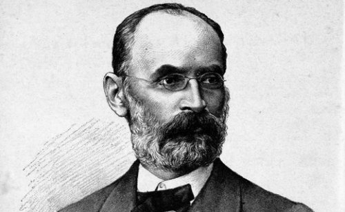

Subota 30 maj, 2020 godine
Iako ga svi znamo pod imenom Đuro Daničić, mnogima je gotovo nepoznat podatak da je ime ovog čuvenog izučavaoca srpskog i hrvatskog jezika zapravo bilo Đorđe J. Popović. Jedan od najvatrenijih zagovornika ideja Vuka Stefanovića Karadžića, Daničić je rođen u Novom Sadu, 04. aprila 1825. godine, a ostao je upamćen i po tome što je tokom čitavog života izučavao i srpski i hrvatski jezik i to sa naučnog stanovišta.
Takođe, istorijski izvori često pominju i podatak da su srpski knez Mihailo Obrenović, ali i Jovan Gavrilović posebno bili naklonjeni njegovom radu, te da su mu u doba kada je studirao pružali i materijalnu pomoć. Bio je sin sveštenika Jovana, a u to doba je njegov rodni grad bio pod vlašću Austrougarske monarhije. Školovao se u svom rodnom mestu i u Požunu, a kasnije i u Beču i Pešti. Kada se susreo sa Vukovim delom počeo je da izučava naš, ali i hrvatski jezik i 1847. godine je objavio svoje kapitalno delo “Rat za srpski jezik i pravopis”, te na taj način u velikoj meri doprineo pobedi Vukovih ideja. Nedugo zatim je objavio i “Malu srpsku gramatiku”, koja je posebna po tome što predstavlja prvo delo u kome se neko bavio srpskim jezik sa stanovišta nauke. Svakako treba imati na umu da je upravo Đuro Daničić zaslužan što slovo đ pišemo danas upravo tako, umesto prethodno dvoglasa đ. Ovo pravilo koje je on uveo je počelo da se primenjuje od 1902. godine, kada je prvi put pomenuto u časopisu “Srđ”, koji je izlazio u Dubrovniku. Kako je bio inspirisan delom i radom Vuka Stefanovića Karadžića, nije loše da pogledate ovde značenje nekih od reči koje su ušle u “Veliki rječnik” čiji tvorac je upravo Vuk i koji je uspeo da na jednom mestu sakupi i sačuva od zaborava mnoge termine. Smatra se da je jedan od nosilaca ideje za postojanje jedinstvenog, srpskohrvatskog jezika upravo Daničić, koji važi za utemeljivača ovog jezika. Pokušao je i da na osnovu ideja koje je Vuk sproveo u reformi srpske ćirilice izvrši reformu latinice Ljudevita Gaja, ali je u tome samo delimično uspeo. Takođe, čuveni Bečki književni dogovor koji je trebalo da reši mnoge sporove između srpskih i hrvatskih lingvista i pisaca je, pored ostalih potpisao i Đuro Daničić, te se iz tog razloga često navodi da je upravo on utemeljivač srpskohrvatskog jezika. U drugoj polovini 19. veka, Daničić je radio i u beogradskoj Narodnoj biblioteci Srbije, a bio je i sekretar pri Društvu srpske slovesnosti, te profesor Velike škole u Beogradu. Kasnije je bio sekretar zagrebačke Jugoslovenske akademije. Iako je umro u Zagrebu, dok je dovršavao rad na “Rječniku hrvatskoga ili srpskoga jezika”, Đuro Daničić je sahranjen u Beogradu 1882. godine. Mnoga dela je uspeo da otrgne od zaborava, tako da su do današnjih dana ostala očuvana i dela kao što su recimo “Nikoljsko jevanđenje”, bosanske redakcije koje je objavljeno 1864. godine, ali i “Žitija Svetog Simeona i Svetog Save od Domentijana”, objavljeno 1865. godine, te “Životi kraljeva i arhiepiskopa srpskih”, objavljeno 1866. godine, kao i Teodosijevo “Žitije Svetog Save” iz 1860. godine i mnoga druga.